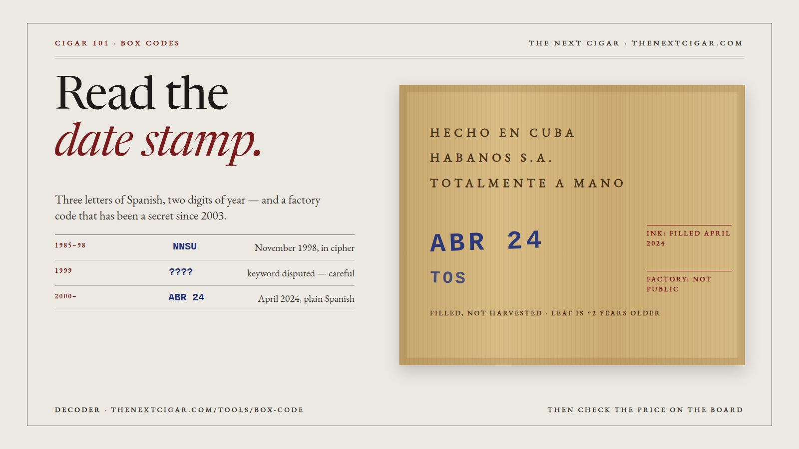

Two lines of ink under every Habanos box. One you can read in ten seconds. The other has been a secret since 2003, whatever the tables online say. Swipe →
Under the marks burnt into the cedar, two crooked lines of blue or black ink. A hand stamp, a few hundred boxes a day. Too perfect worries us more than a little crooked.
AGO is August, DIC is December, and SET turns up now and then for September. Save this slide; it is the only translation you need at a counter.
Fresh Habanos often smoke sharp and closed for months after boxing. From about eighteen months the box settles. Same cigar, same price, two dates on the shelf: take the older one.
| 1985–98 | NNSU = 11 98, November 1998. The letters of NIVELACUSO stand for 1 to 0. |
| 1999 | ???? New keyword; the two best references don't even agree on it. Read with care. |
| 2000– | ENE 00 Plain Spanish month from January 2000, and ever since. |
N is 1, I is 2, V is 3 … O is 0. Month first, in one or two letters, then the year in two. Our decoder reads it for you.
The confident tables online — EL for El Laguito, FPG for Partagás — are the 1985–1998 list under a new heading. For any modern box, the factory line tells you nothing. We say so, rather than guess.
thenextcigar.com/tools/box-code — type the stamp, get the month and year, and an honest “we can't say” for the factory. Full guide with worked examples on the site — link in bio. We sell accessories, never tobacco.